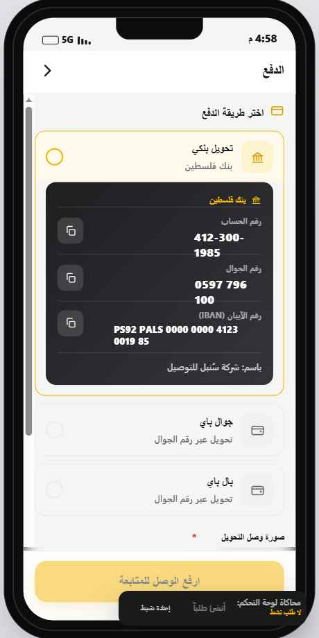
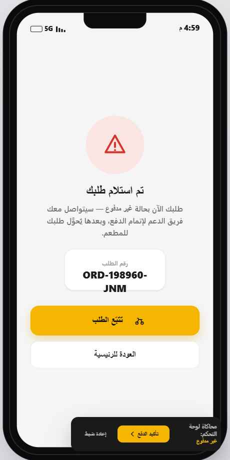
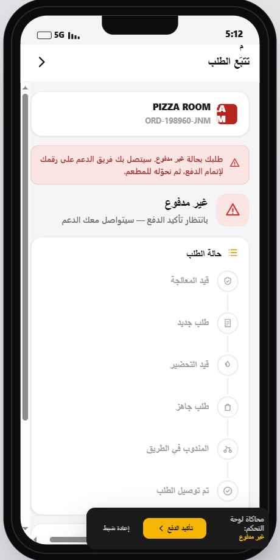
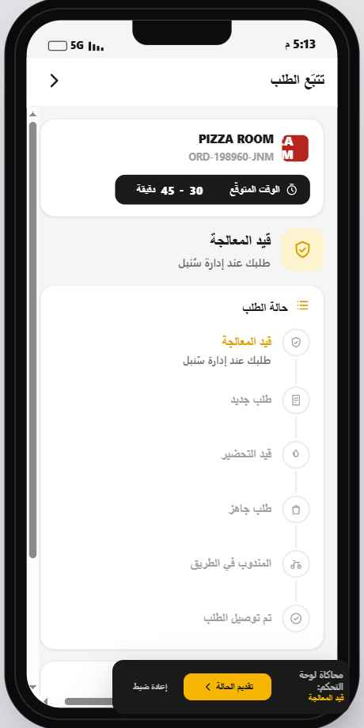
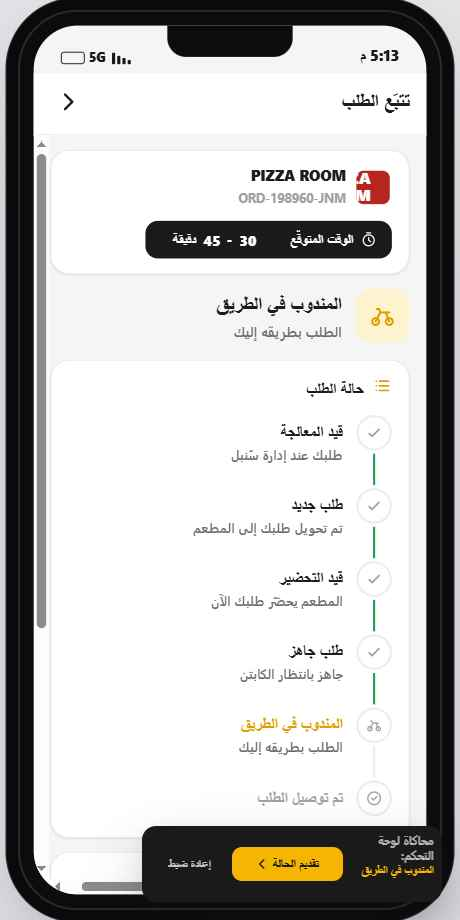

الواجهات التي أُضيفت إلى تطبيق الزبون حسب المنطق الجديد لتتبّع حالة الطلب والدفع. كل واجهة موضّحة بصورتها وعناصرها وسلوكها ونموذج بياناتها، جاهزة للدمج في المشروع.
ثلاث واجهات جديدة + نموذج حالات جديد للطلب. الواجهات الأخرى (الرئيسية، المطعم، السلة، تأكيد الطلب، طلباتي، حسابي) موجودة عندكم — هذه إضافات فوقها.
تظهر بعد تأكيد الطلب. تحويل بنكي + محافظ، حقول قابلة للنسخ، رفع وصل التحويل، وخيار «مشكلة في الرفع».
تظهر مباشرة بعد الدفع. تعرض رقم الطلب والحالة الأولى (قيد المعالجة أو غير مدفوع).
خط زمني عمودي بـ ٦ مراحل + بطاقة الكابتن + بانر «غير مدفوع» + التقييم بعد التسليم.
عند الدفع، يبدأ الطلب من «قيد المعالجة». أما إذا تعذّر رفع الوصل، فيبدأ من «غير مدفوع» (خارج الخط الزمني) حتى يؤكّد الدعم الدفع يدوياً من لوحة التحكم.
الزبون رفع صورة وصل التحويل → الطلب يبدأ مباشرة بحالة قيد المعالجة لدى الإدارة.
الزبون فعّل «مشكلة في الرفع» وكتب ملاحظة → الطلب يبدأ بحالة غير مدفوع، ويتصل الدعم لإتمام الدفع ثم يحوّله يدوياً إلى «قيد المعالجة».

تظهر بعد شاشة «تأكيد الطلب». الزبون يحوّل المبلغ يدوياً ثم يرفع صورة الوصل، أو يبلّغ عن مشكلة في الرفع.

تظهر مباشرة بعد الضغط على «تأكيد الطلب» في شاشة الدفع. تطمئن الزبون وتعطيه رقم طلبه.
ORD-XXXXXX-AAA.


تعرض حالة الطلب الحيّة عبر خط زمني عمودي بنفس مراحل لوحة التحكم، وتتكيّف مع كل حالة.
هذه البُنى تقود الواجهات الثلاث. أعِد استخدامها كما هي أو طابِقها مع أسماء حقول الـ API عندكم.
// unpaid حالة خاصة خارج الخط الزمني. الخط يبدأ من processing بعد الدفع. const STATUS = { unpaid: { label: "غير مدفوع", sub: "بانتظار تأكيد الدفع — سيتواصل معك الدعم", tone: "red" }, processing: { label: "قيد المعالجة", sub: "طلبك عند إدارة سُنبل", tone: "gold" }, new: { label: "طلب جديد", sub: "تم تحويل طلبك إلى المطعم", tone: "blue" }, preparing: { label: "قيد التحضير", sub: "المطعم يحضّر طلبك الآن", tone: "gold" }, ready: { label: "طلب جاهز", sub: "جاهز بانتظار الكابتن", tone: "purple" }, onway: { label: "المندوب في الطريق", sub: "الطلب بطريقه إليك", tone: "gold" }, delivered: { label: "تم توصيل الطلب", sub: "صحتين وعافية", tone: "green" }, }; // الخط الزمني المعروض للزبون (بعد الدفع) const TIMELINE = ["processing", "new", "preparing", "ready", "onway", "delivered"];
const PAYMENT = { bank: { name: "تحويل بنكي", bankName: "بنك فلسطين", fields: [ { k: "رقم الحساب", v: "412-300-1985" }, { k: "رقم الجوال", v: "0597 796 100" }, { k: "رقم الآيبان (IBAN)", v: "PS92 PALS 0000 0000 4123 0019 85" }, ], holder: "شركة سُنبل للتوصيل", }, wallets: [ { name: "جوال باي", fields: [{ k: "رقم الجوال", v: "0597 796 100" }] }, { name: "بال باي", fields: [{ k: "رقم الجوال", v: "0599 123 456" }] }, ], };
// pay.paid = true إذا رُفع الوصل، false إذا فعّل «مشكلة» function placeOrder(pay) { const status = pay.paid ? "processing" : "unpaid"; const order = { number: newOrderNumber(), // ORD-XXXXXX-AAA status, payMethod: pay.method, paid: pay.paid, problemNote: pay.pnote, // ملاحظة «مشكلة في الرفع» receipt: pay.receipt, // صورة الوصل /* ...المطاعم، الأصناف، العنوان، الإجمالي... */ }; saveOrder(order); }
الكود الكامل للواجهات الجديدة موجود في مجلد customer/ بالمشروع. هذه الملفات التي تخص الإضافات الجديدة:
| الملف | الحالة | المحتوى المتعلّق بالإضافات |
|---|---|---|
customer-data.js | معدّل | STATUS، TIMELINE، PAYMENT، newOrderNumber() |
customer-screens-b.jsx | جديد | PaymentScreen، PlacedScreen، TrackScreen، RateRow |
customer-components.jsx | جديد | StatusPill، VTimeline، CaptainCard |
customer-app.jsx | معدّل | placeOrder()، advanceOrder()، تنقّل الدفع والتتبّع |
customer-styles.css | معدّل | أنماط الدفع (.pay-method، .bankcard، .uploadbox، .problembox)، الحالة (.pill-*، .vtl، .statusbig) |